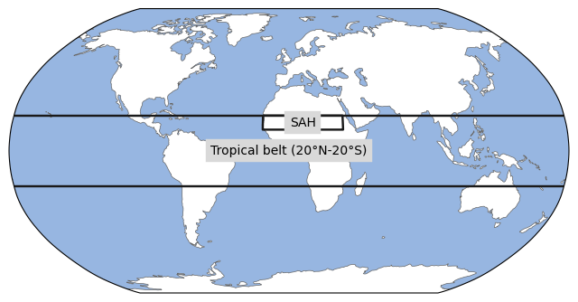
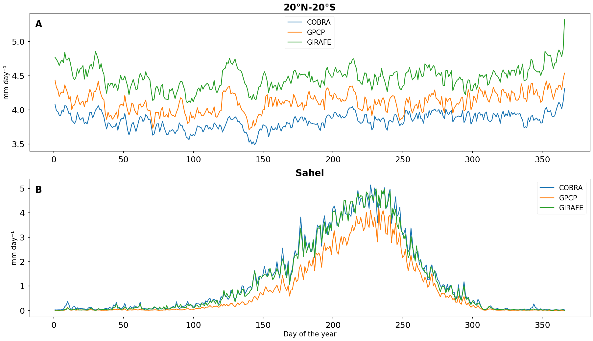
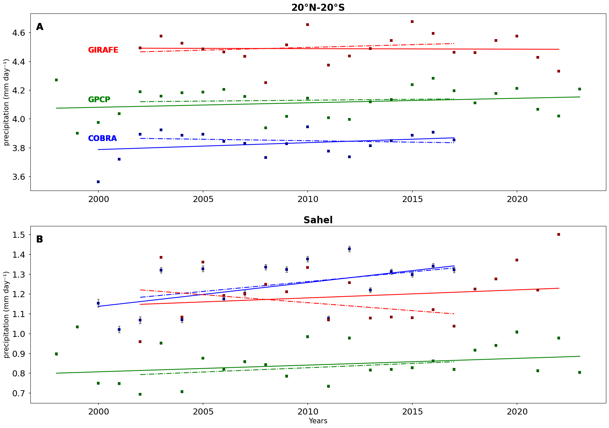

1.1.1. Monitoring long-term changes of precipitation in support of rain-fed farming#
Production date: 31-12-2025
Produced by: ‘CNRS’
🌍 Use case: Observing the regional evolution of rainfall#
❓ Quality assessment question:#
How consistent are the trends and the associated uncertainties in precipitation over the Sahel and over the tropical belt, as obtained with the precipitation products available in the CDS?
Precipitation is a fundamental component of the hydrological cycle. It significantly influences ecosystems, agriculture, water resources, and weather patterns. In recent decades, climate change has been altering precipitation patterns globally, resulting in shifts in intensity, frequency, and distribution. Monitoring and understanding the precipitation changes are crucial for predicting future climate impacts and formulating adaptive strategies. Satellite remote sensing has played a crucial role in this regard, providing comprehensive data on global precipitation. Unlike in situ measurements, which are limited to specific locations, satellite measurements offer extensive coverage across the globe, including remote and oceanic regions [1, 2].
The Global Precipitation Climatology Project (GPCP), the Copernicus Microwave-based Global Precipitation (COBRA) and the Global Interpolated RAinFall Estimation (GIRAFE) are international initiatives aimed at providing accurate, long-term records of global precipitation. The estimate of precipitation intensity is obtained by the combination of microwave imagers on polar-orbiting satellites and infrared imagers on geostationary satellites regarding GPCP and GIRAFE products and only microwave imagers on polar-orbiting satellites for COBRA. The time period covered by these daily estimates varies depending on the product :
GPCP from 1998 to 2024
COBRA from 2000 to 2017
GIRAFE from 2002 to 2022
These datasets are available on the Copernicus Data Store (CDS) at Precipitation monthly and daily gridded data from 1979 to present derived from satellite measurements (GPCP), Precipitation monthly and daily gridded data from 2000 to 2017 derived from satellite microwave observations (COBRA) and Daily and monthly Global Interpolated RAinFall Estimation (GIRAFE) data derived from satellite observations (GIRAFE).
Several versions of GPCP are available on the CDS. For this notebook, the choice is based on the evaluation of the latest version, 3.3, which is available in 0.5°/daily. Comparisons between previously available versions on CDS have been done in [7]. GIRAFE and COBRA are available in 1°/daily. They are the only ones to provide daily precipitation estimates with associated uncertainties.
This Use Case focuses on the climatological evolution of the precipitation over two regions of interest. The first one is the entire tropical belt (20°N-20°S) and the second one is the Sahel region, located between the Sahara Desert to the north and the humid tropical savanna to the south. The Sahel is a critical area for monitoring precipitation trends due to its significant dependence on the Hadley cell circulation. Additionally, this region experiences large interannual and decadal variability in rainfall, which profoundly impacts agriculture, water resources, and living conditions [3, 9]. Monitoring precipitation trends in the Sahel is essential for understanding the effects of climate change [10] and for developing effective water management and agricultural strategies to enhance food security for the local population [11].
📢 Quality assessment statement#
These are the key outcomes of this assessment
Precipitation estimates from GPCP, GIRAFE and COBRA, fall within the range seen in the literature [6] for the mean annual cycle of daily precipitation over the 2002–2013 period in the 20°N–20°S region. However, they exhibit regional biases that vary across the studied area.
The uncertainty of the long-term linear trend is affected by possible autocorrelation of the noise in the data. Thus, the trend uncertainty is corrected as suggested by [4].
All three products show mostly positive and relatively similar trends over the Sahel and the 20°N–20°S region for both the common period (2002–2018) and their respective periods, except for COBRA over the Sahel, which exhibits a higher positive trend, and GIRAFE, which shows a negative trend during the common period.
GPCP and GIRAFE exhibit more similar uncertainties across the studied regions compared to COBRA, which shows greater variability. Overall, the uncertainties of the three datasets are of the same order of magnitude.
The 95% confidence intervals (see section Methodology) for the precipitation trends over both regions are mostly positive for each product which indicates an increase of precipitation with time.
The trend values and the associated uncertainties of each product over the Sahel region are consistent with the literature [2, 3].
📋 Methodology#
The climatological evolution of precipitation is examined for the 3 datasets at the annual scale, computed from the daily values. This climatological analysis is supported by the calculation of uncertainties and trends.
Uncertainty#
Daily precipitation amounts are averaged spatially for all data records, over the regions of interest (the tropical belt and the Sahel), and then annually.
As mentionned above, only GIRAFE and COBRA provide uncertainty estimates at the daily scale. As a result, two different methods are used to estimate the uncertainty of the annual mean.
For GIRAFE and COBRA, we assume that each daily measurement is independent. Although this is a simplification, it allows us to propagate uncertainties even when spatial and temporal correlations are not well known.
We proceed in two steps. First, the uncertainties for each grid box are combined quadratically. Then, the uncertainty of the mean is obtained by scaling with the square root of the number of observations \(N\) over the studied region for a given year:
where \(\sigma_{g,d}\) represents the uncertainty associated with each measurement, \(g\) denotes the grid boxes within the region of interest, and \(d\) the number of days with valid data in the year. \(\sigma_{year}\) is the resulting uncertainty of the annual mean precipitation.
For GPCP, daily uncertainty estimates are not available. Instead, \(\sigma_{year}\) is obtained from the standard deviation \(\sigma_{std}\) of daily precipitation over the studied region for a given year, divided by the square root of \(N\):
Trends#
The trend is estimated for each dataset using a linear fit applied to the annual mean precipitation. The trend uncertainty \(\sigma_{fit}\) is obtained from the fitting parameters and by taken into account the previously uncertainties \(\sigma_{year}\) in the fit procedure. Following [4], \(\sigma_{fit}\) must be corrected with a factor that depends on the autocorrelation of the precipitation time series. Consequently, the corrected trend uncertainty \(\sigma_{fit\_corrected}\) is obtained as follows:
where \(\phi\) is the year-to-year autocorrelation coefficient of the annual mean precipitations.
Lastly, the 95% confidence interval of the trend is computed. This interval defines a range around the estimated trend within which the true value is expected to lie with 95% confidence. It is calculated as:
where \(a\) is the trend of the linear fit and \(\text{t}_{\alpha}\) is a coefficient that depends on the chosen confidence level.
The value of \(\text{t}_{\alpha}\) is defined by:
where \(F\) is the cumulative distribution function of the Student’s t-distribution, and α is the significance level (equal to 0.05 for a 95% confidence interval).
Finally, the number of degrees of freedom used to compute \(\text{t}_{\alpha}\) is:
where \(N\) is the number of data points and \(p\) is the number of parameters in the linear fit (equal to 2 for a linear model).
Method#
The analysis comprises the following steps:
1. Choose the parameters to use and setup code
Import the relevant packages. Define the parameters of the analysis and set the dataset requests
Download the precipitation amount of COBRA, GIRAFE and GPCP products.
3. Climatology of daily precipitation amount
The precipitation amount is averaged per day of the year over the 2002-2013 period across the entire 20°N-20°S region and the Sahel region.
4. Long term trend and uncertainty
The precipitation amount is averaged annually across both regions over the maximum period of the associated product.
The uncertainties are propagated to the means, assuming full independence among the measurements.
A linear fit is performed on the time series, using the precipitation uncertainties to estimate a confidence interval.
The time series and the associated linear trend are visualized and compared to the known literature.
📈 Analysis and results#
Choose the parameters to use and setup code#
Import packages#
Define the regions of interest#
Two regions of interest are defined:
The tropical belt : 20°N-20°S
The Sahel : [12°N-20°N / 17°W-35°E]
and are represented on the map below (Figure 1).

Figure 1: World map showing the tropical belt (20°S–20°N) and the Sahel region (12°N-20°N / 17°W-35°E) studied in this notebook.
Set the data request#
Download the dataset#
Three datasets are requested from the CDS :
The GPCP data record : 1998-2024, v3.3
The GIRAFE data record : 2002-2022
The COBRA data record : 2000-2017
collection_id='satellite-precipitation-microwave'
100%|██████████| 216/216 [01:03<00:00, 3.41it/s]
collection_id='satellite-precipitation'
100%|██████████| 312/312 [01:21<00:00, 3.81it/s]
collection_id='satellite-precipitation-microwave-infrared'
100%|██████████| 252/252 [01:19<00:00, 3.18it/s]
Climatology of daily precipitation amount#
The mean annual cycle of daily precipitation is computed for each data record over 2002-2013 period for the tropical belt and Sahel region. It is obtained by averaging precipitation spatially (longitude-latitude) and by day of the year.

Figure 2 : Mean (2002-2013) annual cycle of daily precipitation (mm/day) over 20°N-20°S (A) and over Sahel region (B) for each precipitation product.
Over both regions, each precipitation product appears to exhibit the same pattern with differences of amplitudes that are more or less pronounced between them. These defferences vary depending on the type of surface, as can be seen over the Sahel region. The existence of these defferences and their variability have already been documented between GIRAFE-GPCP (3.2) [5] and COBRA-GPCP (1.3) in the confluence page of COBRA : Product Quality Assessment Report (PQAR). These differences are mainly due to different precipitation rate calculation algorithms used for each product, as underlined by [8]. It can be noticed that over sahel, GPCP remains different from GIRAFE and COBRA which are themselves quite similar. It shows the lower intensity of precipitation whereas over the equatorial belt, it is between the other datasets. This is because rain gauges are used only within the framework of the GPCP which implies a difference over land surfaces with the other products. The climatological annual cycle over 20°N-20°S of all three products are in the range seen in the literature [6] and present the same pattern. Over the Sahel, they also show a pattern similar reported in [8] with a maximum around the month of August which is around the 240th day of the year on figure 2B.
Long term trend and uncertainty#
Results#
Figure 3 presents, for each product, the annual mean precipitation with associated uncertainties over the tropical belt and the Sahel region. Some of these uncertainties are too small to be visible on the figure. Trends are shown for the common 16-year period (dashed lines) and for each product’s full record. The annual means are obtained by averaging precipitation spatially (longitude-latitude) and temporally. The associated uncertainties and the 95% confidence interval of the trends are computed following the methodology. They are given in Table 1 by region, product and time period with the linear trends.

Figure 3: linear fit of precipitation data over time for each product : GIRAFE, COBRA and GPCP over 20°N-20°S region (A) and Sahel region (B). The colored squares represent the annual mean of the daily precipitations, while the gray error bars correspond to +/- the uncertainty of each measurement. The colored lines are the best-fit linear model for the data, indicating the trend in precipitation over each period.
First of all, it can be noticed on Table 1 that the annual mean precipitations over both regions are consistent with the mean annual cycles shown in figure 2A and B.
Over the 20°N–20°S region, all three products generally exhibit positive trends during both periods. These trends are comparable among datasets, except for GIRAFE over its full period and COBRA during the common period. All estimated trends are consistent with previous studies, indicating a positive trend of approximately 0.07 mm day⁻¹ [2, 3]. Uncertainties remain of similar magnitude across products, with the exception of GIRAFE, which displays substantially lower values.
Over the Sahel region, positive trends are also observed for most products and periods, except for GIRAFE during the common period. COBRA stands out by showing consistently stronger positive trends than the other datasets. Uncertainties are again comparable among products, although COBRA exhibits markedly higher values.
The GPCP shows the greatest temporal stability in terms of trends, with relatively consistent values between periods in both regions, in contrast to GIRAFE and COBRA. Moreover, only COBRA displays substantial regional differences in uncertainty. The 95% confidence intervals for the precipitation trends over both regions, are mostly positive for each product which indicates an increase of precipitation with time.
| A: Respective period | ||||||
|---|---|---|---|---|---|---|
| Region | 20°N-20°S | Sahel | ||||
| Product | GIRAFE | GPCP | COBRA | GIRAFE | GPCP | COBRA |
| Trend (mm/year) | -0.0037 | 0.0312 | 0.0480 | 0.0406 | 0.0340 | 0.1204 |
| Uncertainty (mm/year) | 0.0004 | 0.0009 | 0.0027 | 0.0008 | 0.0010 | 0.0061 |
| CI_95% (mm/year) | [-0.0005, -0.0003] | [0.0029, 0.0033] | [0.0042, 0.0054] | [0.0039, 0.0042] | [0.0032, 0.0036] | [0.0107, 0.0133] |
| B: Common period | ||||||
|---|---|---|---|---|---|---|
| Region | 20°N-20°S | Sahel | ||||
| Product | GIRAFE | GPCP | COBRA | GIRAFE | GPCP | COBRA |
| Trend (mm/year) | 0.0384 | 0.0127 | -0.0200 | -0.0806 | 0.0432 | 0.0989 |
| Uncertainty (mm/year) | 0.0005 | 0.0025 | 0.0027 | 0.0009 | 0.0009 | 0.0044 |
| CI_95% (mm/day) | [0.0037, 0.0039] | [0.0007, 0.0018] | [-0.0026, -0.0014] | [-0.0083, -0.0079] | [0.0041, 0.0045] | [0.0089, 0.0108] |
Table 1: Estimated linear trends (mm yr⁻¹) for each product and region, reported with their associated uncertainties and 95% confidence intervals (CI₉₅). Results are shown for each product’s full period (21, 26, and 18 years for GIRAFE, GPCP, and COBRA, respectively; A) and for the common 16-year period (B).
ℹ️ If you want to know more#
Key resources#
Some key resources and further reading were linked throughout this assessment.
The CDS catalogue entry for the data used is:
Code libraries used:
C3S EQC custom functions,
c3s_eqc_automatic_quality_control, prepared by B-Open
Reference/Useful material#
[1] Adler, R.F.; Sapiano, M.R.P.; Huffman, G.J.; Wang, J.-J.; Gu, G.; Bolvin, D.; Chiu, L.; Schneider, U.; Becker, A.; Nelkin, E., 2018: The Global Precipitation Climatology Project (GPCP) Monthly Analysis (New Version 2.3) and a Review of 2017 Global Precipitation. Atmosphere, 9, 138. https://doi.org/10.3390/atmos9040138
[2] Gu, G., Adler, R.F., 2023: Observed variability and trends in global precipitation during 1979–2020. Clim Dyn 61, 131–150. https://doi.org/10.1007/s00382-022-06567-9
[3] Biasutti M., 2019: Rainfall trends in the African Sahel: Characteristics, processes, and causes. WIREs Clim Change.10:e591. https://doi.org/10.1002/wcc.591
[4] Weatherhead, E. C., Reinsel, G. C., Tiao, G. C., Meng, X.-L., Choi, D., Cheang, W.-K., Keller, T., DeLuisi, J., Wuebbles, D. J., Kerr, J. B., Miller, A. J., Oltmans, S. J., and Frederick, J. E., 1998: Factors af- fecting the detection of trends: Statistical considerations and applications to environmental data, J. Geophys. Res.-Atmos., 103, 17149–17161, https://doi.org/10.1029/98JD00995
[5] Konrad, H., Roca, R., Niedorf, A., Finkensieper, S., Schröder, M., Cloché, S., Panegrossi, G., Sanò, P., Kidd, C., Jucá Oliveira, R. A., Fennig, K., Sikorski, T., Lemoine, M., and Hollmann, R., 2025: GIRAFE v1: a global climate data record for precipitation accompanied by a daily sampling uncertainty, Earth Syst. Sci. Data, 17, 4097–4124, https://doi.org/10.5194/essd-17-4097-2025
[6] Bador, M., Alexander, L. V. Contractor, S., and Roca, R., 2020: Diverse estimates of annual maxima daily precipitation in 22 state-of-the-art quasi-global land observation datasets, Environ. Res. Lett. 15 035005, https://iopscience.iop.org/article/10.1088/1748-9326/ab6a22
[7] Huffman, G. J., R. F. Adler, A. Behrangi, D. T. Bolvin, E. J. Nelkin, G. Gu, and M. R. Ehsani, 2023: The New Version 3.2 Global Precipitation Climatology Project (GPCP) Monthly and Daily Precipitation Products. J. Climate, 36, 7635–7655, https://doi.org/10.1175/JCLI-D-23-0123.1
[8] Sanogo, S., P. Peyrillé, R. Roehrig, F. Guichard, and O. Ouedraogo, 2022: Extreme Precipitating Events in Satellite and Rain Gauge Products over the Sahel. J. Climate, 35, 1915–1938, https://doi.org/10.1175/JCLI-D-21-0390.1
[9] Nicholson, SE., Fink, AH., Funk, C., 2018: Assessing recovery and change in West Africa’s rainfall regime from a 161-year record. Int J Climatol. 38:3770–3786. https://doi.org/10.1002/joc.5530
[10] Monerie, PA., Pohl, B. & Gaetani, M. 2021: The fast response of Sahel precipitation to climate change allows effective mitigation action. npj Clim Atmos Sci 4, 24. https://doi.org/10.1038/s41612-021-00179-6
[11] Yang, K., Wang, G., Cai, W. et al., 2026: Increased interannual variability of Sahel rainfall under greenhouse warming. Nat Commun 17, 1125. https://doi.org/10.1038/s41467-025-67885-0